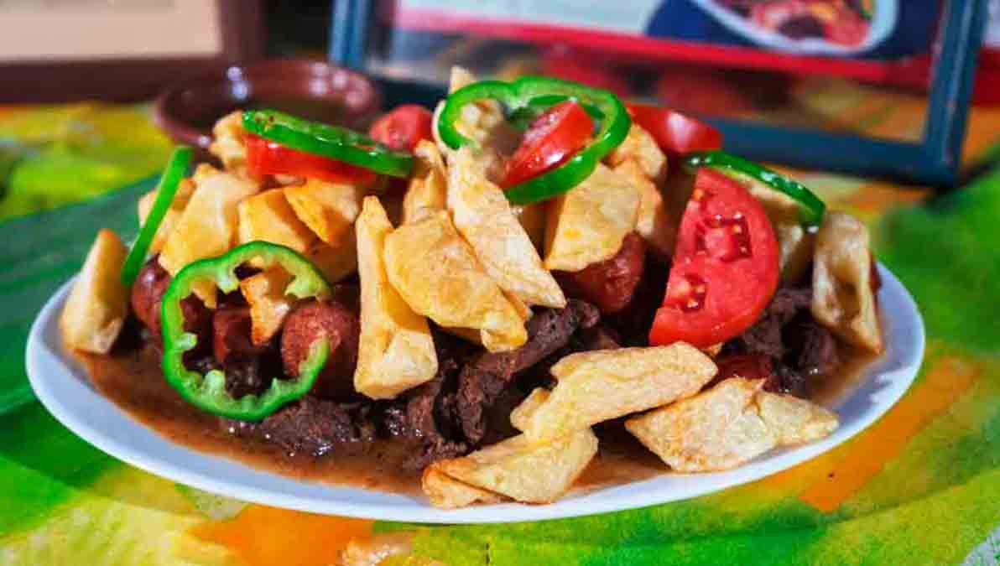
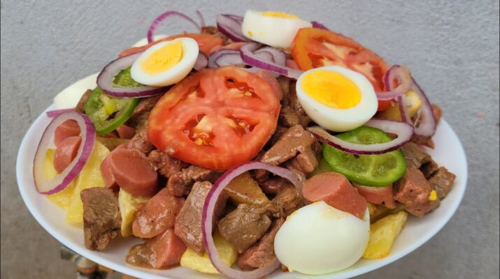

Semana del Piquemacho – La Paz 2025
Celebra la tradición, el sabor y la cultura paceña
Ver Actividades

Celebra la tradición, el sabor y la cultura paceña
Ver ActividadesEl piquemacho es un plato tradicional que combina carne, papa frita y un toque picante de locoto. Aunque su origen está en Cochabamba, La Paz lo celebra con pasión en una semana dedicada a la gastronomía y cultura.
🥩 Carne jugosa
🍟 Papas fritas
🌶️ Locoto picante
🧅 Cebolla y tomate

🥚 Huevo duro

🌭 Chorizo / Salchicha
| Día | Actividad |
|---|---|
| Lunes | Inauguración y feria gastronómica |
| Martes | Concurso de piquemacho tradicional |
| Miércoles | Exhibición de piquemachos innovadores |
| Jueves | Charlas sobre gastronomía paceña |
| Viernes | Concurso interdepartamental |
| Sábado | Música, danza y degustación |
| Domingo | Clausura y premiación |